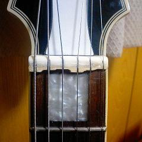
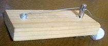

MTSインストール
2007年12月19日 カテゴリー：ギター関係
ミネハラス－パーチューンシステム（MTS）というのをインストールしてみました。要は各弦ごとにナット位置を調整して低フレットを抑えたときのシャープを抑えるものらしいです。結果ブリッジの位置も少しずれます。詳しいことはネットで調べると出てきます。
やる前は、やはり少しシャープしていました。で、木片でナットを作ってみました。この木（たぶんホワイトウッド）は加工性はいいですが強度に不安があるので接着剤で固めてます。

ブリッジ側へのシフト量は、6弦で3ミリ弱ぐらいでしょうか。ＭＴＳのサイトで見た写真を目算でマネしています。適当ですがそれなりに効果があります。若干フラット気味になりましたが、そのときは少しシフト量を削ればいいだけです。まぁ抑え方が強いとシャープするので、シャープ気味よりはフラット気味のほうがマシでしょう。でも数値では改善されてても、耳で聞く限りそんなに変わった感じはしないんです（耳が悪いのかなぁ）。前の状態で録音しとけばよかったんですけど。
ナットを作るのが結構大変です。指板のアールに合わせて底を削るのが特に厄介です。あと弦が乗る溝を目立てヤスリなんかで削るんですが、そのとき↓こんなのを使ってます。

ボロいペグと板切れを使って古い弦を張ったものです。太い弦の場合、目立てヤスリに紙やすりをつけてある程度削ったら、コレでゴリゴリ削って仕上げをします。専用のヤスリは高いですからね…
作りのいいギターは最初からナットを少しブリッジ側に寄せてあるみたいです。でも結局ある程度のズレはやむをえないといったところでしょう。